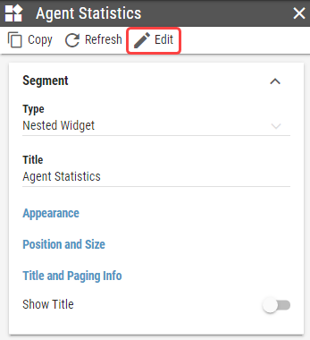
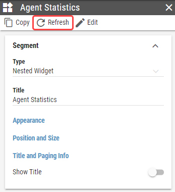

Nested Widget¶
A widget can be displayed inside of a segment, using the Nested Widget segment type. Nested Widget is fully interactable.
For general information about this segment, see Nested Widget chapter.
The nested Widget can be selected in the Widget dropdown. Only Widgets from the same Business Unit or Shared Business Unit can be selected.
The Nested Widget cannot be edited directly in its parent Layout, like other segments. Instead, an button opens up a new tab and navigates to the Nested Widget’s panel in edit mode.
Figure 3: Edit button
If any changes are made to the widget while the parent layout is open, the widget needs to be refreshed by clicking on the button in order to see the changes in the nested widget.
Figure 4: Refresh button
- Widget
A widget, that should be nested.
- Appearance
The style of the Nested Widget.
- Show Background
Whether background from the nested Widget should be applied.
- Background Type
Type of the Widget’s background.
- Background Color
Only available if Solid Color is selected as Background Type
For more information see Color Field section.
Color of the Widget’s background.
- Background Image
Only available if Image is selected as Background Type
Image of the Widget’s background.
- Scaling Mode
Whether the relative sizes in widget segments should be applied relative to parent layout or to widget itself.
- Self
Relative sizes in widget segments are applied relative to the widget itself.
- Parent
Relative sizes in widget segments are applied relative to parent layout.
- Apply Theme
Whether parent layout theme, theme set on the widget itself or custom theme should be applied to segments in widget.
- Custom Theme
Only if Custom is selected as Apply Theme
Visual theme, applied to all segments in the Nested Widget.
- Data Sources
Mapping of widget calculations to parent layout calculations. For more information see Data Sources chapter.